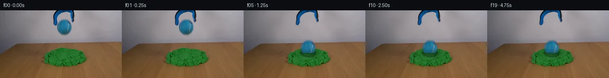

![首帧]()

Round 00
2026-11-04T20:46:15.372391+00:00像素候选变化代码 +330/−0inspection 更新
pixels 4540e93954e828f4 · code 089e1b062b281439
查看本轮 generate.py 真实 diff
--- previous/generate.py
+++ current/generate.py
@@ -0,0 +1,330 @@
+"""Deterministic source-pixel continuation; only first_frame.png is scene input."""
+from pathlib import Path
+import json
+import math
+
+import cv2
+import numpy as np
+from scipy.ndimage import distance_transform_edt, gaussian_filter
+from PIL import Image, ImageDraw
+
+from artifact_io import save
+
+ROOT = Path(__file__).resolve().parent
+W, H = 256, 144
+FPS, COUNT = 4, 20
+Y, X = np.mgrid[:H, :W].astype(np.float32)
+SOURCE = np.array(Image.open(ROOT / 'first_frame.png').convert('RGB'))
+SRC = SOURCE.astype(np.float32)
+CX, CY = 134.8, 35.65
+RELEASE = 0.40
+GRAVITY = 4300.0
+CONTACT_Y = 66.1
+IMPACT = RELEASE + math.sqrt(2 * (CONTACT_Y - CY) / GRAVITY)
+IMPACT_V = GRAVITY * (IMPACT - RELEASE)
+PENETRATION = 13.8
+K = IMPACT_V / PENETRATION
+
+
+def smoothstep(v):
+ v = np.clip(v, 0, 1)
+ return v * v * (3 - 2 * v)
+
+
+def remap(a, sx, sy):
+ return cv2.remap(a, sx.astype(np.float32), sy.astype(np.float32),
+ cv2.INTER_LINEAR, borderMode=cv2.BORDER_CONSTANT,
+ borderValue=0)
+
+
+def over(dst, premult, alpha):
+ return dst * (1 - alpha[..., None]) + premult
+
+
+# Derive the local removal support from color and a measured ball envelope.
+# The original table and the wall away from the released objects are preserved.
+ball_envelope = ((X - CX) / 18.8) ** 2 + ((Y - CY) / 21.2) ** 2 < 1
+blue_dark = ((SRC[..., 2] - SRC[..., 0] > 9) | (SRC.min(2) < 85))
+tool_remove = blue_dark & (X > 109) & (X < 159) & (Y < 34)
+tool_remove = cv2.dilate(tool_remove.astype(np.uint8),
+ np.ones((5, 5), np.uint8)) > 0
+remove = tool_remove | ball_envelope
+WALL = cv2.inpaint(SOURCE, remove.astype(np.uint8) * 255,
+ 5, cv2.INPAINT_TELEA).astype(np.float32)
+
+
+def matte(core, domain):
+ """Known-background, nearest-interior-color local alpha estimation."""
+ _, indices = distance_transform_edt(~core, return_indices=True)
+ near = SRC[indices[0], indices[1]]
+ direction = WALL - near
+ a = np.sum((WALL - SRC) * direction, 2) / np.maximum(
+ np.sum(direction * direction, 2), 1)
+ a = np.clip(a, 0, 1)
+ a[core] = 1
+ a *= domain
+ a[a < 0.018] = 0
+ # Premultiplied colors avoid neutral wall halos after a sprite moves.
+ p = SRC - WALL * (1 - a[..., None])
+ p = np.minimum(np.maximum(p, 0), 255 * a[..., None])
+ p[a == 0] = 0
+ return p.astype(np.float32), a.astype(np.float32)
+
+
+# The ball silhouette is soft in the source. The interior only supplies colors;
+# the alpha border comes from actual source-to-wall color differences.
+ball_r = np.sqrt(((X - CX) / 15.1) ** 2 + ((Y - CY) / 15.65) ** 2)
+ball_core = ball_r < 0.84
+ball_domain = (ball_r < 1.30) & (Y >= 16) & (Y <= 57)
+ball_domain &= ~((X < 120) & (Y < 33))
+ball_domain &= ~((X < 121) & (Y < 28))
+ball_domain &= ~((X >= 149) & (Y < 26))
+BALL_P, BALL_A = matte(ball_core, ball_domain)
+
+# Independently separate the slender jaws from the ball at their contact edge.
+tool_domain = (Y < 36) & (X > 109) & (X < 159)
+tool_domain &= ((Y < 16) | ((X < 123) & (Y < 28)) |
+ ((X < 120) & (Y < 35)) | ((X > 147) & (Y < 28)))
… diff truncated; 243 more lines …